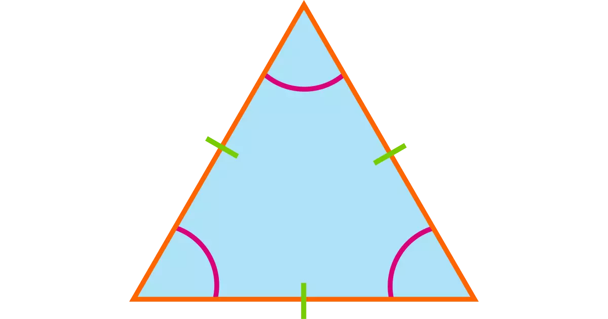
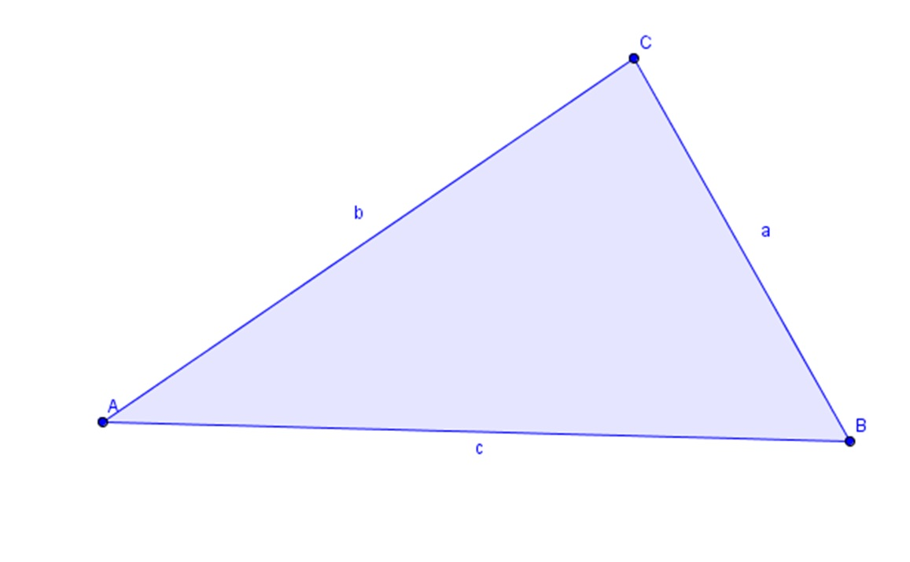

Equilateral triangle!
In geometry, an equilateral triangle is a triangle in which all three sides are equal. In the familiar Euclidean geometry, an equilateral triangle is also equiangular; that is, all three internal angles are also congruent to each other and are each 60°. It is also a regular polygon, so it is also referred to as a regular triangle. Learn about equilateral triangles
Isosceles triangle!

In geometry, an issosceles triangle is a triangle that has two sides of equal length. Sometimes it is specified as having exactly two sides of equal length, and sometimes as having at least two sides of equal length, the latter version thus including the equilateral triangle as a special case. Learn about isosceles triangles
Scalene triangle!
Scalene triangles are defined as a triangle where the interior angles are all different. Most triangles drawn at random would be scalene. The converse of this is also true - If all three angles are different, then the triangle is scalene, and all the sides are different lengths. Learn about scalene triangles